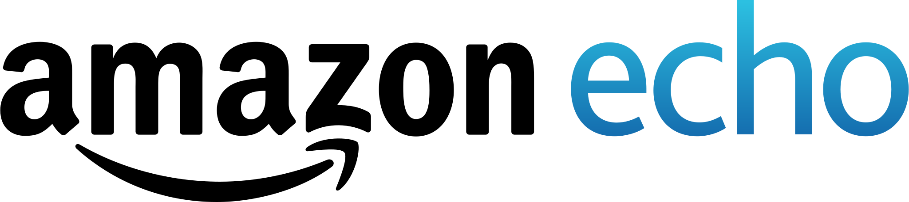
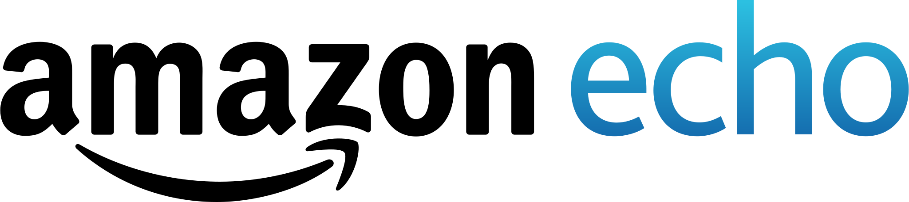

Talent Land
- Participación Talent Land primer edición.
- Desarrollador de Julia APP, plataforma ganadora de la vertical de salud en Talent Land.
- Ganador Hackathon Vertical Salud.
Leer másSoy egresado del tecnológico nacional de México campus San Juan del Río como Ingeniero en sistemas computacionales, tengo una especialidad en Internet de las Cosas, uno de mis hobbies es encontrar solución a los problemas de los demás que requieran de Desarrollo Web, me gusta crear contenido para YouTube, TikTok y streaming de video para Twitch, compartiendo temas de tecnología, me encanta, el LoFi Hip Hop, visitar nuevos lugares, dedicar tiempo a mis seres queridos, a mis mascotas y sobre todo practicar nuevas tecnologías.
Me gusta desarrollar en tecnologías como HTML, CSS, JavaScript y React 💻
Learn more 



- Participación Talent Land primer edición.
- Desarrollador de Julia APP, plataforma ganadora de la vertical de salud en Talent Land.
- Ganador Hackathon Vertical Salud.
Leer másMentor del Hackathon Talento 360, convocado por El Poder Ejecutivo del Estado de Querétaro, a través de la Secretaría de la Juventud y la Secretaría de Contraloría.
Participación y segundo lugar Hackathon BBVA Bancomer en la categoría Lector de Códigos QR 2018.
Participación en la primera edición del Hackathon HackaTecnm del TECNM con sede en Toluca 2018.
Ganador al Joven del Año en la categoría Ciencia y Tecnología de la convocatoria Premio Municipal de la Juventud Colón 2018.
Participación y cuarto lugar en el Hackthon Talent Land, en la vertical Educación de calidad, desarrollo de habilidades para Amazon Alexa.
Leer másParticipación y top 10 Hackathon Talent at Home “Reactivando la economía en México”.
Bootcamp impartido por Microsoft para la certificación AZ-900 de Azure.
Ver certificación